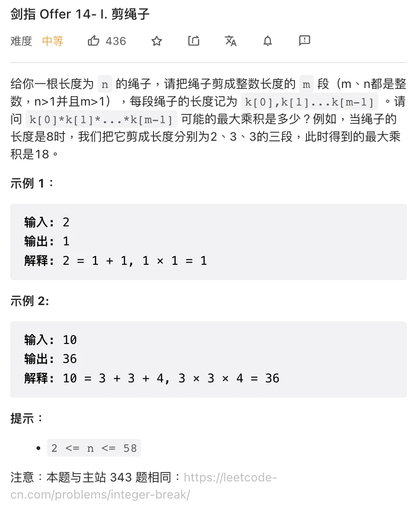

剑指 Offer 14- I. 剪绳子
Question

先自己想想看 🤔Try it yourself first 🤔
✍🏽 My Solution
执行用时：0 ms, 在所有 Java 提交中击败了100.00%的用户
内存消耗：38 MB, 在所有 Java 提交中击败了74.69%的用户
class Solution {
public int cuttingRope(int n) {
if (n == 1) return 1;
if (n == 2) return 1;
if (n == 3) return 2;
//dp[i]表示長度為i的最大乘積
int[] dp = new int[n+1];
dp[0] = 1; //隨便填一個值
for (int i = 1; i <= n; i++) {
for (int j = 1; j <= i; j++) {
if (dp[i] < j * dp[i-j]) {
dp[i] = j * dp[i-j];
}
}
}
return dp[n];
}
}
🧠 Thought Process
- Why did I choose this particular implementation?
- 同等爬樓梯問題
- 每個階段從繩子中割出1、2…k長度的一段。
- 定義狀態：int dp[n+1]，dp[i] 表示長度為i的繩子切割之後的最大乘積
- 到達i這個狀態，那上一步只有可能是割了1、2…i 長度一段，也就是從狀態i-1、i-2、i-3、…、0轉化過來。dp[i]值也由dp[i-1]、dp[i-2]、dp[i-3]、…、dp[0]推導出來
- dp[i] = max(1dp[i-1], 2dp[i-2], 3dp[i-3], …, idp[0])
- 剪绳子：剪绳子的话乘积就是 j * dp[i - j] 减去第一段的长度 * 剩下长度的最大值 剪第一段，第二段不剪，直接 j * (i - j ) 当前的长度 * 剩下的长度 链接：https://leetcode.cn/problems/jian-sheng-zi-lcof/solution/jian-zhi-offer-by-leetcode_xsong-yrqo/